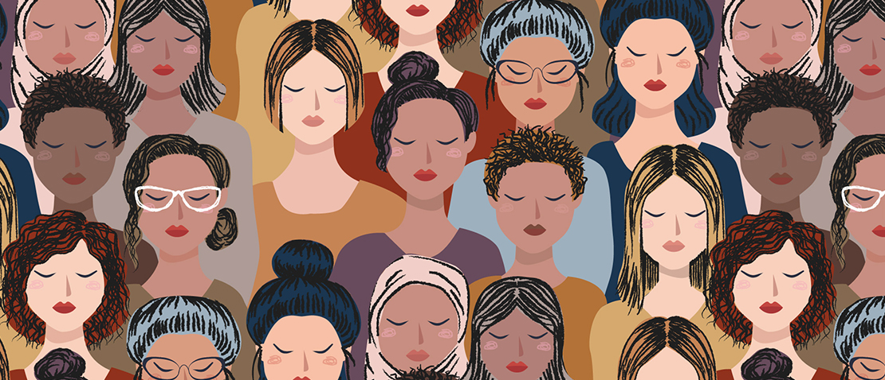

A plataforma

A página Minas Unidas é uma iniciativa dos alunos do primeiro período do curso de Sistema de Informação da Puc Minas no semestre 2/2021 para a matéria de Projeto Web I. Com a supervisão do corpo docente e parceiros nas mais diversas frentes de apoio, a página fornece um centro de informação e conexão a toda a população, principalmente a vítimas e espectadores de violência doméstica no estado de Minas Gerais.
Nossos Valores
Promover equidade, solidariedade, respeito e pluralidade no acesso de informações e conexão a serviços e redes de apoio fornecidos pelos entes públicos e associações da sociedade cívil. Sem fins lucrativos, nos comprometemos com a dignidade humana, em particular, meninas e mulheres brasileiras.
Nossa Missão
Pesquisar, coordenar, monitorar e disponibilizar informação de qualidade acerca das políticas públicas e agentes da sociedades que prestam apoio a mulheres e meninas no estado de Minas Gerais. Garantir que o acesso a esta informação seja compreensivo, responsivo e universal.
Eixos Estratégicos de Atuação
Para a promoção da equidade social e econômica na vida de milhares de mulheres do estado de Minas Gerais, disponibilizamos caminhos e ferramentas para a ruptura do ciclo de violência doméstica facilitando o acesso a informação, serviços especializados de saúde, processos capacitação e instrutivos.
- Conscientização sobre o assunto referente à violência contra a mulher
- Disponibilização das leis referentes ao tema no âmbito estadual e nacional
- Apoio psicológico, profissional, social e capacitação através das redes de apoio
- Compartilhamento de depoimentos e relatos acerca das experiências de outros usuários
- Divulgação de eventos e atualizações oficiais referentes ao tema abordado
- Localização dos agentes públicos com suporte para a denúncia
Equipe
Equipe formada por 5 alunos do curso de Sistema de Informação da Puc Minas (2021).
Cordenação
Hugo de PaulaProfessor do departamento de Ciência da Computação da Puc Minas.